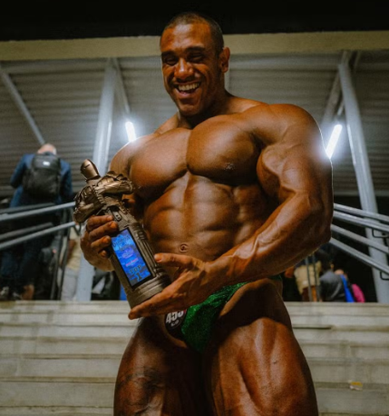
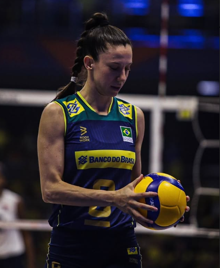

Abomai conquista Pro Card

Atleta de fisiculturismo Guilherme Abomai foi campeão da categoria Open no Mr. Olympia Brasil e garantiu acesso ao circuito profissional.
LEIA AGORAMacris fala sobre o veganismo

A medalhista olímpica e atleta da seleção brasileira de vôlei é vegana desde 2017. Macris afirma que seu desempenho nas quadras melhorou, e que influenciou familiares e até uma colega de profissão a deixarem de comer carne.
LEIA AGORASVB promove campanha com atletas veganos
Confira a campanha da Sociedade Vegetariana Brasileira lançada no dia 1º de abril. Com o intuito de desmentir ideias comuns de que veganos são fracos, imagens de atletas veganos de alto nível foram exibidas em estações de metrô e aeroportos.
LEIA AGORA